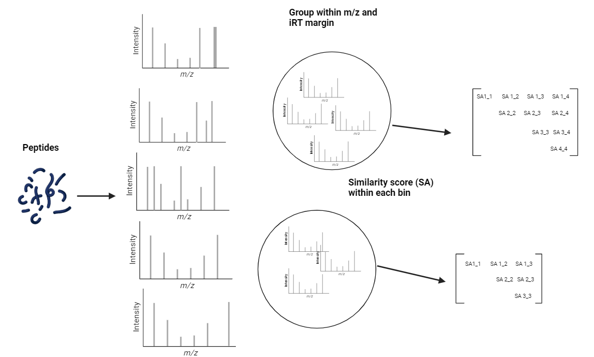

Welcome to MSCI’s documentation!¶
Contents:
Introduction:¶
Peptide identification by mass spectrometry relies on the interpretation of fragmentation spectra based on the m/z pattern, relative intensities, and retention time (RT). Given a proteome, we wondered how many peptides generate very similar fragmentation spectra with current MS methods. MSCI is a python package built to assess the information content of peptide fragmentation spectra, we aimed calculating an information-content index for all peptides in a given proteome would enable us to design data acquisition and data analysis strategies that generate and prioritize the most informative fragment ions to be queried for peptide quantification.

Installation:¶
prerequisites:
Python 3.8 -3.11
Anaconda
Matchms
Example:¶
Here is a small example of using MSCI to calculate pairwise normalized spectral angle .. testcode:
from MSCI.Data.preprocessing_data import read_msp_file
from MSCI.grouping.groups import MassContentInformation, process_data
from MSCI.similarity.Similarity import process_combin
File= 'MSCA_Package/Tryptic_peptides/Dataset/msp_files/charge2_3myPrositLib.msp'
#spectra = list(load_from_msp(File))
#pickle.dump(spectra, open('MSCA_Package/Tryptic_peptides/Dataset/msp_files charge2_3myPrositLib.pkl', 'wb'))
mz_irt_df = read_msp_file(File)
g = MassContentInformation(mz_irt_df)
group = g.group_sequences(1,10, unit='Da')
group = np.array(group, dtype=object)
combin = process_data(group)
np.save("MSCA_Package/Tryptic_peptides/Dataset/combin/charge2_3_LR.npy", combin)
Should output
Indices and tables¶
geindex